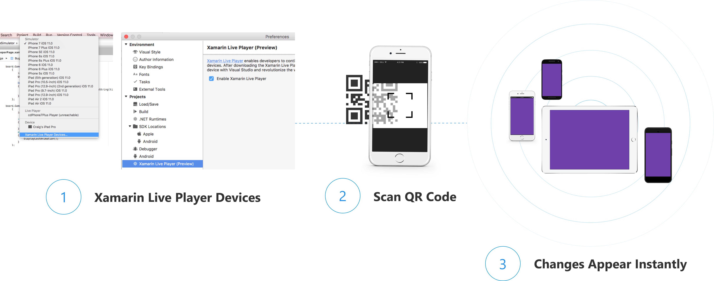
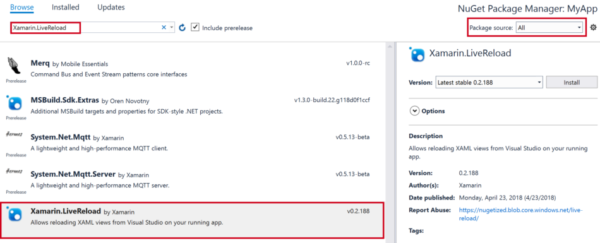

TOC
Live Player v Live Reload.
So, your developing a Xamarin app and getting tired of the make a change, save the change, build the change, deploy the change notice you messed it up so starting the loop over again. Yes that loop can take a few minutes and all you might be editing is the value in the CSS file to change and test the colour of the background (Yes Xamarin.Forms has CSS styling now that’s awesome too give it a try…).
So, what is the alternative to the Build/Package/Deploy loop that will not only save you time but also your sanity…
Enter two tools from the Visual Studio / Xamarin teams and they are:
They both allow you to enter a quicker loop of make a change and see that change almost instantly for UI changes, so that change of colour can be tweaked until it’s just right.
Warnings
Both LivePlayer and LiveReload are still in various stages of Preview so what is written here could and probably has changed so check the links to the Docs above for the latest updates.
These are MY observations as a freelance developer of both tools having used them on real life projects over recent months and I would be interested to hear your thoughts on them in the comments at the end. (Not you mum, she reads my blog doesn’t understand it, but she reads it anyway… Hi Mum…)
This blog is being written while at Flight Level 400 (40,000ft) so without a web connection so this really is my thoughts and experiences and any errors/omissions are due to a lack of Google and Stack Overflow. Don’t worry the Autopilot is engaged and I am writing this from the comfort of the crew rest area while on break.
Live Player
So, what is LivePLayer, this was announced at Build17 and is designed as a getting started sandbox for developers to get their ideas visualized on a device quickly (Copied straight from the Docs).

The important part here is the ‘On-Device’, LivePlayer works by you installing the LivePlayer app from the respective App store onto your device and then pairing it with Visual Studio (both VS17 and VS4Mac work!). Then you can run the app in debug with the Device paired and as you make changes these are visualised immediately on the device which is super cool. The app on the device receives the XAML changes and interprets them into the view you see on screen, so this also means that for layout and UI designs you can even see the IOS screen without needing the glowing apple machine in the corner of your office. This last part for me when I am travelling the world has been brilliant as I can just pack my dev Droid & IOS devices and using my mini Wi-Fi router work on my projects on a beach or coffee shop somewhere around the world.
So, this sounds too good to be true but trust me it works, and I have been using it since it launched last year to get most of the way with my UI designs, before moving back to the Build/Package/Deploy loop for final tweaks.
But what are the limitations of Live Preview:
- You need a WIFI network that all devices share, and you can only pair and use one device at a time.
- As the code is interpreted you can’t run some of the popular NuGet’s like SQLite/Json.Net as there is limited support for reflection.
- You can’t use your superior Xamarin skills to test that killer Custom Renderer/Effect as they are not supported.
- Tools like FODY/AutoFac/AutoMapper won’t work again due their use of reflection.
- Biggest of all limitation for me is the Lack of UWP support, Yes, I include UWP in my projects and this surprised me at first as Microsoft are shunning their own store and devices especially now the Surface Go is in our lives (SOOOO want one of those!!!).
Live Reload
Next up and a more recent and I feel a quieter release is Live Reload, I only found out about this in the past few weeks and it has totally changed my Dev experience. I had some issues getting Live reload working at first which I will talk about in a moment.
So Live Reload requires you to install from the Visual Studio Marketplace as an extension now, but I’m sure it will be part of VS soon. Currently it’s only available for VS17 and not VS4Mac but the team say this is being worked on for a later release. Once you have the tooling installed for the project you need to install a NuGet package but follow the instructions on the Docs as I couldn’t find it at first as the package is not on Nuget.org so you have to change your Package source to All to find it and don’t forget to tick the Preview box as well (It’s hidden away in there…)

Once you have it installed for all the projects you need to add LiveReload.Init(); to the constructor in the Application class
public partial class App : Application
{
public App ()
{
// Initialize Live Reload.
#if DEBUG //Remove this for UWP to work!!
LiveReload.Init();
#endif
InitializeComponent();
MainPage = new MainPage();
}
}
So that’s it now you can Build and Deploy as if your deploying for real, and it’s at this point during that first Deploy you can pop off for a well-earned coffee refill… Go You!!
Now you have it deployed any changes you make to the XAML or CSS will be reflected immediately on the Device or and here is the best bit on your Emulator/Simulator of choice… Yes, no more lugging around dev devices and batteries, no more sand in the connectors and I guess a little less fuel used when flying around the world, carrying all those grams of weight.
So, what can Live Reload do that is different to Live Preview, well other than it can work on device and emulator it’s a deployed version of your application not an Interpreted version of the XAML/CSS but the actual On-Device live view, it’s your actual app as it would work on that device.
Now that is super cool
But what are its limitations there having to be some right it can’t all be cake and Caipirinha’s on the beach now can it.
- Will only show changes to XAML/CSS as this is all that is re-deployed to the device/emulator. Changes to VM or other code behind requires a re-deploy to take effect, but the Visual Studio and Xamarin teams are working on this for later releases so watch this space.
- I found that my Firewall/Anti-Virus software blocked MQTT.exe (required by LiveReload) as it thought it was naughty so sandboxed it. I had to set a rule to allow it before Live Reload worked.
- Works Offline for the Emulators but Wi-Fi is still needed for devices. (WooHoo coding in the Air… When on break of course!)
- Currently just for VS17 yet to come for VS4Mac.
- For UWP there is currently an issue where editing the XAML while in debug mode can cause runtime crashes which is why I remove the #if Debug part in the App.cs and run the App without debugging unless I need to step thru my code. This is being worked on according to the docs so should be fixed soon.
But why choose this over Live Preview what are the benefits that mean you can celebrate with another slice of cake and more coffee…
- Works with ALL Emulators and Simulators as well as ALL devices that are supported by Xamarin.Forms after all it’s a deployed app not an interpreted version. Yes, even UWP and Tizen…
- It’s a compiled and deployed version of your application so the full working version including all your favourite 3rd party libraries that don’t work with Live Preview (Now we really are eating our cake!).
- Reload of the UI changes do not re-create the pages, so your App State is preserved across these re-loads so including all the View Model data and even the Injected Dependencies. The only time you lose this is if you do a re-deploy due to changes to the C# code.
- You can deploy side by side so something like UWP on your laptop, Android Device and via your Mac to an IOS Simulator on your Windows Machine, all side by side and you can see your changes live. What is not to love about that… just need to link in the Samsung TV in the living room and get the MacBook down from the shelf to have all the Xamarin.Forms bases covered.
- If you go to the trouble to setup a remote MQTT server like CloudMQTT.com or HiveMQ on Azure you could even have remote devices seeing the changes live. I have not tried this yet but plan to try it soon so that a client can see the app working and play with it while I make changes to the UI. Now this is seriously awesome if it works and I will post the set-up and thoughts on it here soon.
Final Thoughts
So that’s my experience of playing with these the two awesome tools that are still officially in Preview, and for me the Live Reload wins by miles. It works with all devices doesn’t need a special app to be installed on the device and it’s your actual code not an interpreted version. I am still confused why there are competing tools in this space and I guess one will win out and for me I hope it’s Live Reload.
Both tools only allow you currently to edit the XAML/CSS but with news that Live Reload may in the future allow changes to your C# code again it’s another reason to give it a try.
Awesome work by the Visual Studio and Xamarin teams making Xmarin.Forms development not just easier but faster as well especially for the UI elements, this means I can get my UI layers in front of my Client earlier and reduce the need for major changes later in the project.
As always (Yes, I know it’s only my 2nd blog post!) if you have any comments then leave them below or contact me via Twitter/email etc or of course come find me on the beach I will be the one with the cake and Caipirinha and a big Live Reloaded smile on my face… ;)
Right must go my time is up need to go do the other day job and fly the plane if your reading this I landed without incident as well…